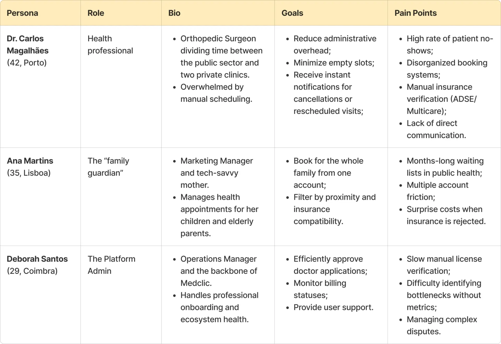
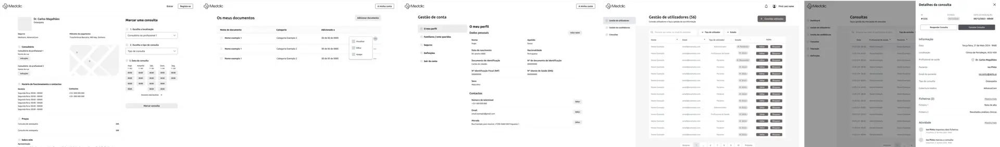
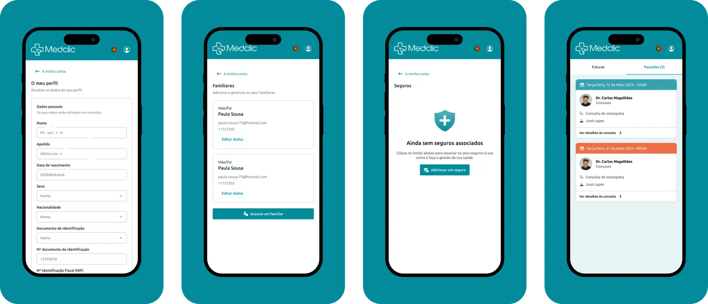
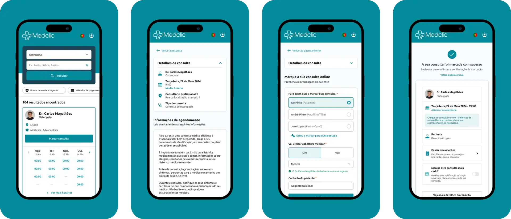
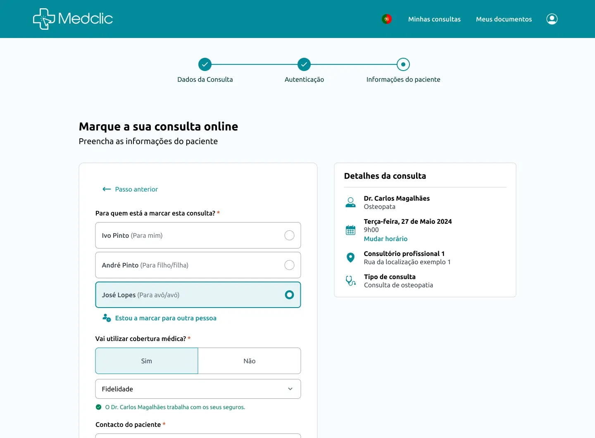
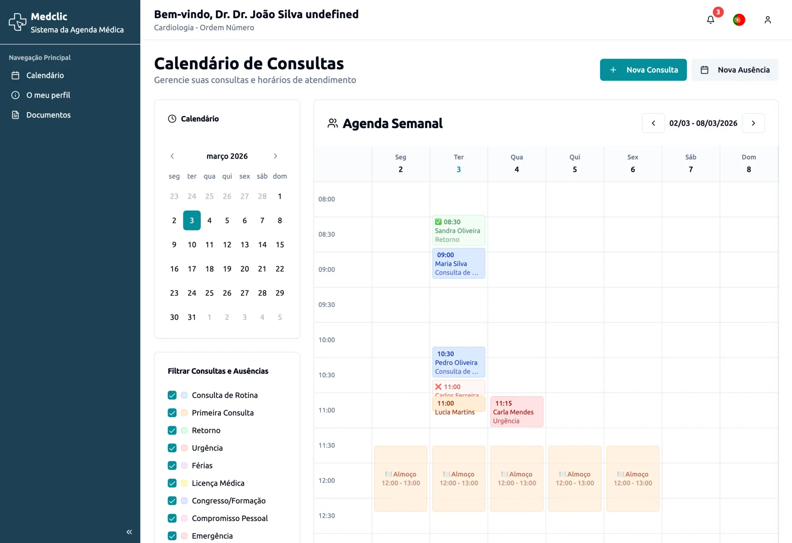
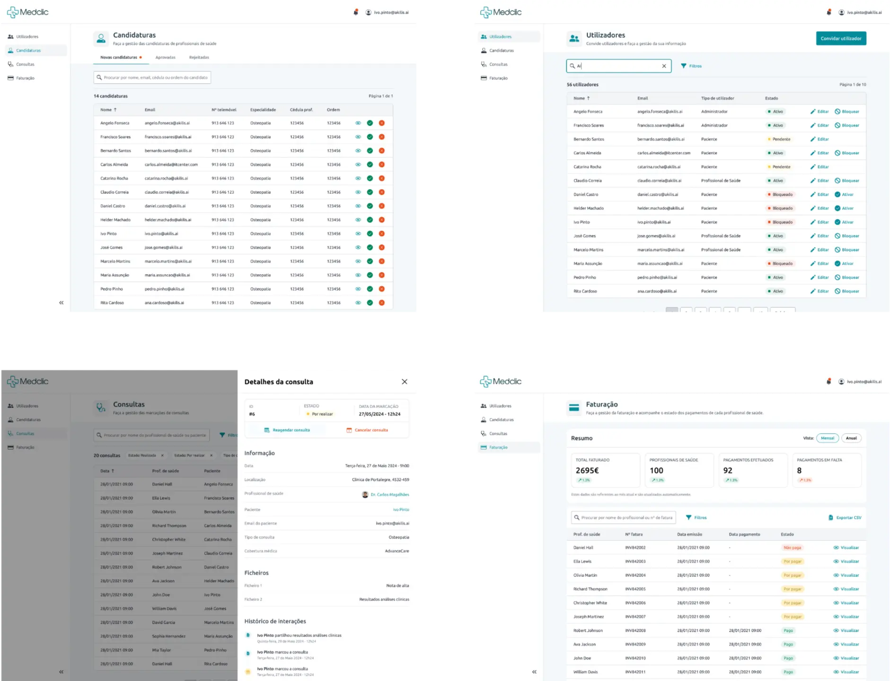

Saúde · Web app responsiva
Medclic
Uma plataforma pensada para aproximar profissionais de saúde e pacientes — e tornar a marcação de uma consulta um processo fluido, intuitivo e sem complicações.

A versão curta
Em Portugal, a espera por uma consulta de especialidade pode chegar a meses ou mesmo anos, deixando os pacientes numa situação vulnerável.
Pesquisa e definição do âmbito do MVP, wireframes, design visual e marca.
Uma plataforma para pacientes, médicos e administradores, com marcação online, gestão de familiares, validação de seguros e gestão de agendas.
Visão geral
Fundada por dois médicos que vivem a realidade do setor «por dentro», a Medclic surge como uma plataforma estratégica pensada para simplificar a ponte entre médicos e pacientes. O foco é garantir a proximidade entre profissionais de saúde e utilizadores, e que marcar uma consulta seja um processo fluido, intuitivo e sem complicações.
Que problema estamos a tentar resolver?
Na saúde, o tempo de espera por uma consulta de especialidade pode estender-se por meses ou até anos, deixando os pacientes numa situação vulnerável.
O panorama da saúde em Portugal enfrenta um obstáculo crítico: a lentidão.
Objetivos estratégicos
- Facilitar a ligação entre profissionais de saúde e pacientes.
- Disponibilizar um portal digital centralizado onde os profissionais se podem registar e gerir e manter o seu perfil.
- Permitir que os pacientes encontrem e marquem consultas por especialidade e localização.
- Permitir a marcação direta de consultas médicas online, através da plataforma.
- Simplificar a entrada de profissionais de saúde, permitindo que se candidatem diretamente a partir da landing page.
- Garantir que todos os utilizadores são notificados por email de confirmações, cancelamentos ou reagendamentos.
Pesquisa
Métodos de pesquisa
Em reuniões com os fundadores, identificámos pontos de dor que vão além da tecnologia — tocam na cultura da saúde em Portugal:
«Recebemos pacientes que esperaram um ano por uma consulta de especialidade no sistema público e, quando chegam ao privado, perdem-se no processo de marcação. O sistema tem de ser tão simples que deixe de parecer uma barreira e passe a ser uma porta aberta.»
«As pessoas esquecem-se ou não se dão ao trabalho de desmarcar. Precisamos de um sistema de alertas automáticos e confirmações rápidas que nos liberte do trabalho de gestão e garanta que a agenda não tem vagas por preencher enquanto há pessoas em lista de espera.»
«O nosso paciente típico pode ter 5, 30 ou 70 anos. Se o processo de marcação for confuso ou parecer “demasiado tecnológico”, o paciente sénior desiste e volta a ligar para o centro de saúde. Tem de transmitir a mesma confiança que um médico de família, ou ter um sistema de marcação para familiares.»
«Passamos metade do tempo da consulta a preencher formulários ou a validar dados do seguro. Se a plataforma conseguir antecipar a recolha de informação no momento da marcação, ganhamos minutos preciosos para o que realmente importa: o paciente.»
Principais motivadores
Gestão integrada de familiares
Permitir que os utilizadores adicionem familiares à sua conta e marquem consultas em nome deles.
Fluxo de marcação rápida
Um fluxo de pesquisa por especialidade, localização ou sintoma.
Gestão da agenda do médico
Um painel intuitivo onde os profissionais de saúde podem gerir a sua disponibilidade.
Validação imediata de seguros e acordos
Feedback imediato sobre se o seguro do paciente é compatível com os acordos do profissional de saúde.
Análise competitiva
Antes de avançar para a solução, fiz uma análise aprofundada de líderes do setor como a Doctolib, a Doctoralia e a Zocdoc. O objetivo era desconstruir os seus fluxos e identificar padrões estabelecidos em que pacientes e médicos já confiam.
| Funcionalidade | Doctolib | Doctoralia | Zocdoc |
|---|---|---|---|
| Gestão de familiares/dependentes | Avançada: vários perfis (crianças/idosos) geridos e marcados a partir de uma única conta principal. | Básica: permite marcar para outras pessoas durante o fluxo, mas a gestão de perfis de dependentes é limitada. | Standard: contas familiares permitem marcar e acompanhar consultas dos dependentes. |
| Verificação do seguro | Por documento: o paciente carrega uma foto do cartão do seguro para o médico rever antes da consulta. | Por pesquisa: filtrar médicos por seguradora (ex.: ADSE, Multicare, Médis). | Com IA: verificação do seguro em tempo real, a partir de uma foto do cartão. |
| Gestão de marcações | Integrada com o processo clínico: fluxo completo da clínica, com salas de espera digitais e gestão automática da lista de espera. | Foco em marketing: calendário simples com lembretes automáticos por SMS e WhatsApp. | Marketplace: marcação imediata com formulários de check-in digital para poupar tempo. |
| Telemedicina | Nativa: plataforma de vídeo segura, com partilha encriptada de receitas e relatórios. | Integrada: videoconsultas com ferramenta própria. | Terceiros: links de vídeo integrados para consultas remotas, com foco na facilidade de acesso. |
| Avaliações e reputação | Rigorosa: foco em dados profissionais verificados; não usa avaliação pública por estrelas. | Valor central: muito assente em avaliações públicas de pacientes, classificações e comentários detalhados. | Verificada: só pacientes que foram mesmo à consulta podem deixar uma avaliação. |
| Registos de saúde | Centralizados: espaço seguro para guardar receitas, baixas médicas e relatórios. | Básicos: sobretudo o histórico de consultas passadas e futuras feitas na plataforma. | Por formulário: foco em digitalizar a ficha de admissão antes da consulta. |
Definição
Personas

Arquitetura de informação
Três perfis, três mapas: o que cada pessoa encontra ao entrar, por onde navega e que ações tem disponíveis.
- Página inicial
- Barra superior: Notificações, Pesquisa de pacientes, A minha conta
- Menu lateral: Calendário, Notas, Equipa, Tarefas, Mensagens dos pacientes, Gestão dos pacientes, Consulta de vídeo, Minha atividade
- Home
- A minha conta
- Meus documentos
- Minhas marcações
- Página de pesquisa
- Marcar consulta → Perfil do médico
- Selecionar hora na agenda do médico → Página de marcação de consulta
- Página de pesquisa
- Portal de administrador
- Utilizadores: Convidar utilizador; Editar utilizador (Reenviar convite, Redefinir palavra-passe, Bloquear, Ativar); Bloquear utilizador; Ativar utilizador
- Consultas: Detalhes da consulta (Reagendar consulta, Cancelar consulta, Marcar nova consulta, ambos com processo de reagendamento); Cancelar consulta
- Candidaturas: Novas candidaturas (Detalhe da candidatura com Aprovar e Rejeitar; Aprovar candidatura; Rejeitar candidatura); Candidaturas rejeitadas (Detalhe); Candidaturas aprovadas (Detalhe; Ver perfil do utilizador, que leva a Editar utilizador)
- Faturação: Detalhes da fatura (Transferir fatura)
Bloquear, ativar, cancelar, aprovar e rejeitar pedem confirmação.
Mapas originais: médico · paciente · administrador


Design
Wireframes de baixa fidelidade
Com a pesquisa e as personas como base, o passo seguinte foi traduzir requisitos médicos complexos em wireframes de baixa fidelidade.


Assim que o primeiro rascunho ficou pronto, fizemos uma sessão de feedback dedicada com os fundadores (os dois médicos). Esta reunião colaborativa foi essencial para garantir que os layouts cumpriam os seus padrões clínicos e as necessidades reais.
Design system
Este design system não surgiu como um mero exercício estético, mas como uma ferramenta estratégica: uma paleta de cores consistente, regras claras de hierarquia tipográfica e um conjunto estruturado de componentes reutilizáveis.


Layouts finais
Gestão do paciente
Um ponto central para gerir dados pessoais, seguros e histórico de consultas. O grande diferenciador é a gestão de familiares, que permite centralizar num só perfil os cuidados de saúde dos filhos ou dos pais idosos, facilitando o cuidado entre gerações.

Fluxo de marcação rápida
Um fluxo de marcação otimizado para confirmar consultas em segundos. O paciente pode seguir o caminho mais rápido a partir dos resultados de pesquisa ou ganhar mais contexto no perfil do médico, num processo flexível e rápido.

Validação imediata de seguros e acordos
Um sistema de validação que cruza automaticamente o seguro do paciente com os acordos do médico. O feedback visual imediato elimina a incerteza sobre custos e garante total transparência antes de confirmar a marcação.

Gestão da agenda do médico
Uma ferramenta que dá ao médico controlo total da sua agenda: atualizar horários, gerir consultas em várias clínicas, partilhar receitas com os pacientes e receber notificações em tempo real de novas marcações ou cancelamentos, reduzindo bastante o trabalho administrativo.

Gestão do administrador
O centro de controlo da plataforma para gerir utilizadores e verificar candidaturas de profissionais de saúde. Permite também acompanhar o estado das consultas e gerir a faturação, garantindo a qualidade e a viabilidade operacional do ecossistema.

Aprendizagens
Aproximar a saúde das pessoas
Trabalhar num projeto de saúde lado a lado com profissionais médicos foi uma experiência muito gratificante. O feedback constante deles foi essencial para construir uma ferramenta humana e prática. Para mim, este projeto foi pessoal.
O poder da documentação
Um dos maiores desafios foi definir e documentar os muitos casos de uso de três plataformas distintas (Paciente, Médico e Administrador).
Crescer para projetos futuros
Uma lição importante: definir as funcionalidades com ainda mais detalhe nas fases iniciais. Mesmo trabalhando de forma ágil, percebi que um âmbito técnico mais detalhado elimina ambiguidades no desenvolvimento web e evita «scope creep» ou surpresas durante a construção.
Próximos passos (pós-MVP)
Por causa do calendário do projeto e do foco num MVP (Minimum Viable Product) enxuto, algumas funcionalidades de alto valor ficaram para iterações futuras:
- Teleconsulta: videoconsultas integradas, para permitir o acompanhamento remoto de pacientes com mobilidade reduzida ou que vivem longe.
- Pagamentos e faturação integrados: integrar a plataforma de faturação SAGE, para que os administradores vejam o estado das subscrições dos profissionais de saúde.
- Faturação imediata: emissão automática da fatura logo após a consulta ser confirmada ou realizada.